kleiner perkins fellowship
submission for 2023 KP design fellowship
This project got me to become a KP Finalist!
read about the program here: Kleiner Perkins Fellows Program ↗
overview
As a college student who loves interior design, I love using tools such as Houzz ↗ to help inspire me and curate my current living space. College students often move and live in multiple environments, transitioning from living with their family and moving from dorms to apartments. During my time in college I spent my first year during the pandemic at home, moved into a co-op house with one roommate then with two other roommates then moved into a two bedroom apartment. These transitions required me to find affordable furniture and decoration solutions that fit my needs and also the requirements of my co-op and apartment (no holes, white walls only, and so on).
While I enjoyed using Houzz to gain inspiration and find furniture I wanted to invest in, it was harder to find pieces that fit my budget and size requirement living in smaller spaces. I usually end up shopping at places tailored to student needs such as IKEA or Target. I decided to re-design Houzz to expand its user base to fit the needs of students who have a passion for interior design.
How Might We: Adapt Houzz’s online features to fit the needs of College Students on a budget?
My Design Process for this Challenge
Research → Ideate → Protoype → Test → Iterate
research
Looking into Houzz
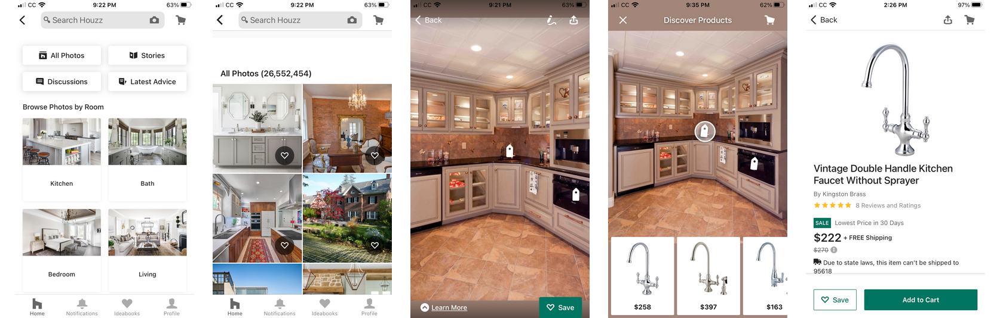
Above you will see screenshots that I explored within Houzz before I dove into the project. I used these to explore features I felt needed updating and for references in order to create my prototypes (finding fonts and icons). After exploring my project you can come back up to see what changes I made compared to the orginal interface.
interviews
I learned that many college students I knew did not know about Houzz. So for my research I decided to interview 2 Houzz users and 3 college students with a passion for interior design.
some questions I asked were:
- What features of Houzz do you utilize?
- What are some pain points you find while using the app?
- And for non-Houzz users: What tools would you find most helpful in finding home decor?
- What are some general pain points you have when searching for home decor?
- >What are some priorities you have when looking for home decor?
research insights
on students
I found that home decor was important to both college students and their parents who were often involved in helping pick up packages from stores and making the purchases. Students often pick up furniture packages rather than having them shipped to their dorm or apartment.
Because of joint involvement of students and parents, students often expressed concern about coordination as students needed their parents in town to help move furniture packages from the store to their dorm or apartment if they did not own a car.
Proximity was necessary so either students could pick up decor themselves and would not be required to drive or take transit very far. Furniture also had to be packed in an easy to transport method that could be built in their dorm or apartment.
Budgeting was also highly important. Many students shared that they planned to resell or donate their furniture when they plan to move out as they would rather buy new more permanent furniture for their living space after graduation.
on houzz
Houzz did not provide easy to find furniture options that did not involve shipping. It also often contained many items that were unaffordable for college students. However that the budget filter helped them narrow down items that were within their budget.
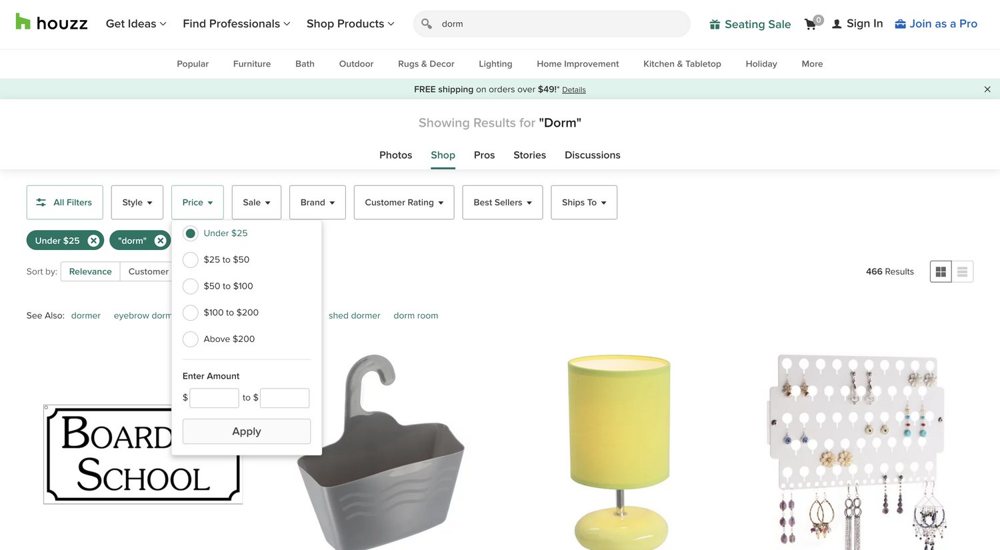
The “Home Design Ideas” section also had limited dorm or small apartment inspiration and photos. Some students found the dorm room styles outdated compared to their own prefered styles or what they found on other apps such as Pinterest or Instagram for inspiration.
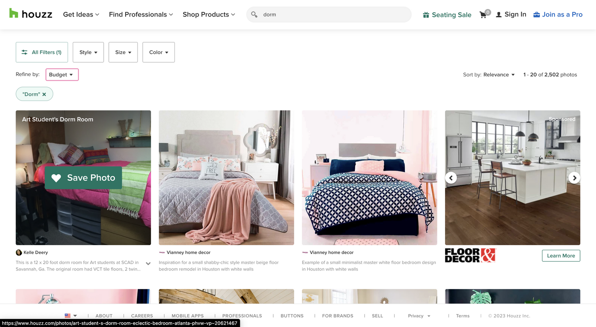
Students who used Houzz also shared that they never used the “Find Professionals” feature but would possibly do so if they knew more about professionals who cater to college needs. One interviewee mentioned that they lack interior design skills but would still love to enjoy their apartment space and would consider hiring a fellow college student to design their home. Others also mentioned having builders such as a TaskRabbit be integrated with Houzz to help build their furniture.
ideate
One thing I have learned about Gen Z is that we are all about quick trends. Architectural Digest Story on TikTok Trends ↗
Because of that I decided to ideate concepts that help college students find items from stores that cater to college students such as IKEA, Target or Urban Outfitters and allow users to know if these items are available for pickup nearby. There can also be a way to identify those new trends such as “Cottage Core”, “Y2K”, “Boho”, or “Grunge” and what key pieces of decor help create that aesthetic, whether it be fake ivy vines, band posters, or a general color scheme for bedding that can be incorporated with their current furniture and is budget friendly for when there's a style update.
For ideation and inspiration I looked towards Pinterest which I love to use for interior design inspiration. When I searched “interior design” I noticed that Pinterest suggested styles it thought I may like based on the algorithm.
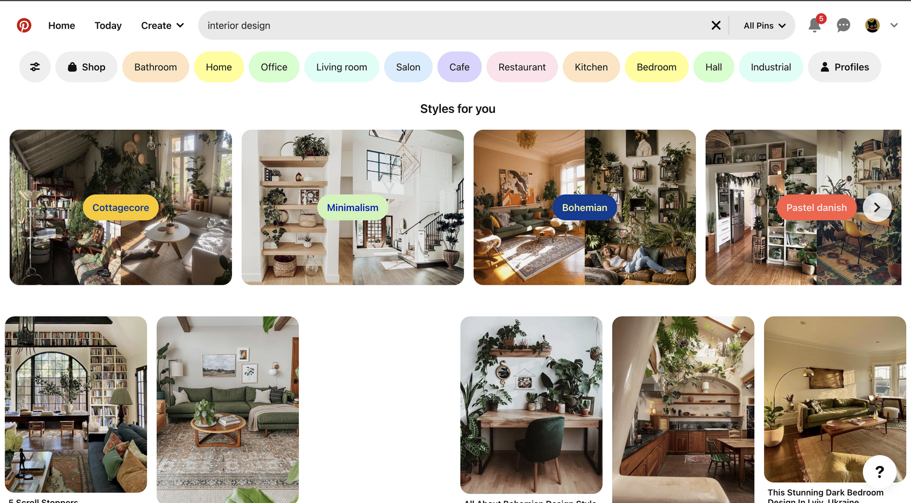
Exploring within a style allows one to see photos that are similar to those on Houzz, which allow for inspiration and understanding style trends such as “Pastel Danish” seen below, a trend that I’ve been enjoying recently.
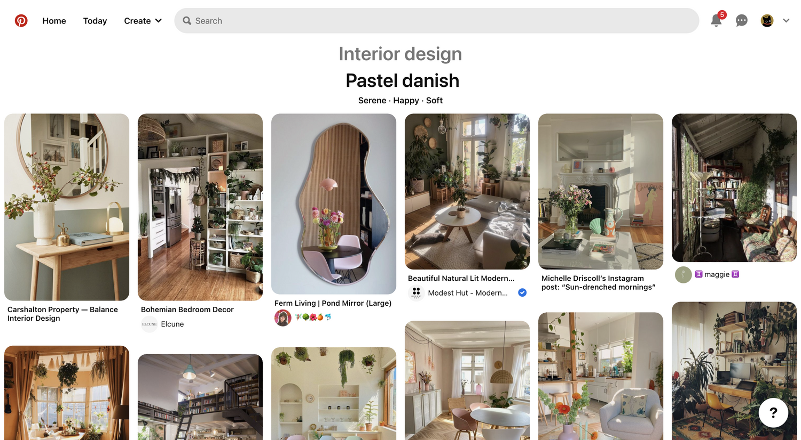
Pinterest also recommended me “Teenage Decor” as a style, based on my past dorm research. These helped in understanding the current dorm room trends. What Pinterest lacks however compared to Houzz is the fact that users are often left wondering where to find products featured. I find many conversations within Pinterest photos of users asking where the poster bought items such as chairs or bed frames.
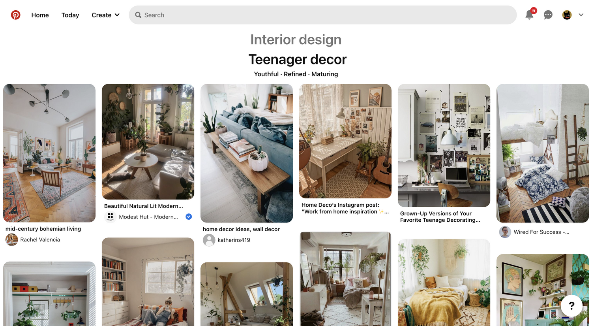
The concept I decided to prototype would be a feature that encourages users to share photos of their dorms or apartments as well as integrating media from places such as Pinterest and uses the Houzz product tag feature to share products from sellers such as IKEA or Urban Outfitters and shares the product availability nearby.
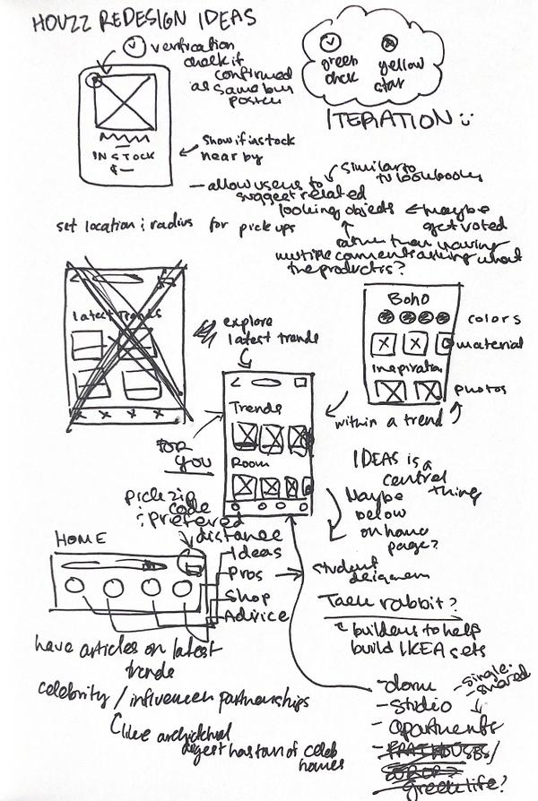
Here is a scan of my ideation process in my notebook!
prototype
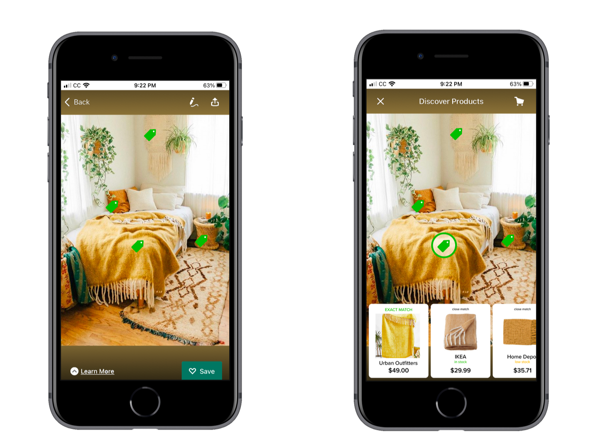
Here I developed two prototypes of the altered screen for the student version of Houzz. These two screens show the tags for products shown on a photo, clicking tags show what products have been used as well as similar looking products. My inspiration for this feature was based on https://wornontv.net/ ↗ which shares exact and similar matches of clothing items worn by characters from popular tv shows.
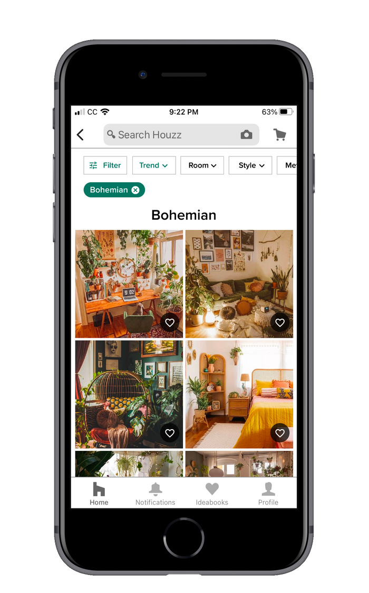
Here I created a filter that allows users to see ideas based on trends, through filters. Possibly Houzz could intergrate cross posting from sites such as Pinterest or independed blogs in order to help boost more trendy decor styles.
test
I asked my previous five interviewees to come back for user testing.
Feedback I received based on my wireframes and prototypes were mainly on the matching of products. Two of my interviewees requested some interactivity that allows users to contribute similar to how they do in comment sections, where people often exchange details on exact or similar product items (like on pinterest). I was also asked and challenged on finding a way to reduce duplicate questions about a particular product that occur on Pinterest and Houzz in popular discussions. I noticed that people prioritized suggestions from humans rather than artificial intelligence.
With this I decided to create a feature that allows users to become contributors and suggest similar products.
Based on feedback I found that my current trends page only helped for finding inspiration but not on really learning what the trend consisted of (in terms of general patterns or materials). I decided to update my user flow for the trends page to help users learn more about a specific trend by finding colors and materials to help them shop for particular items.
iterate / final product
Iterated prototypes
The following prototypes are based on if a user has indicated a zip code in their profile. Additional settings could be created allowing users to set a distance they would be okay with traveling in order to find stores that have products in stock nearby.
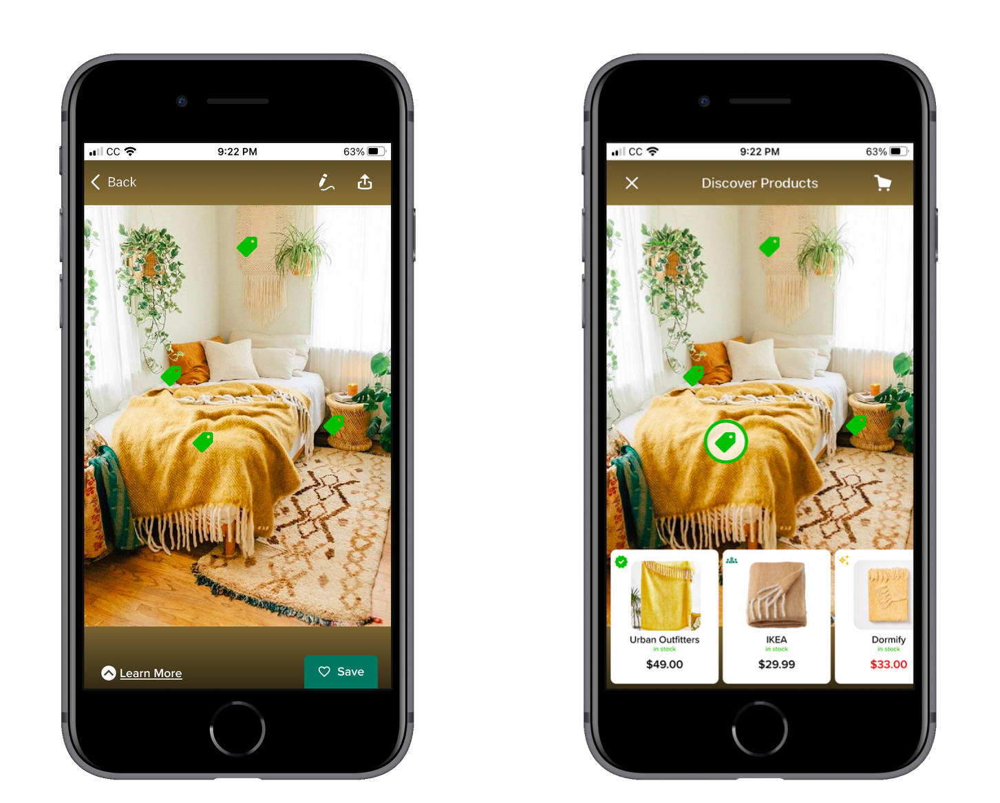
Here is the iterated version of my first prototype. I slightly modified the tag icons to be more fleshed out as well as added icons in the product section to identify verifications, contributions and auto generated items. I also indicated in red if a product was on sale from the seller. Auto Generated and Contributed items are shown in order to help find budget friendly options that are similar to the product such as IKEA’s blanket shown above having a similar yellow pattern being around $20 less than the orginal blanket from Urban Outfitters.
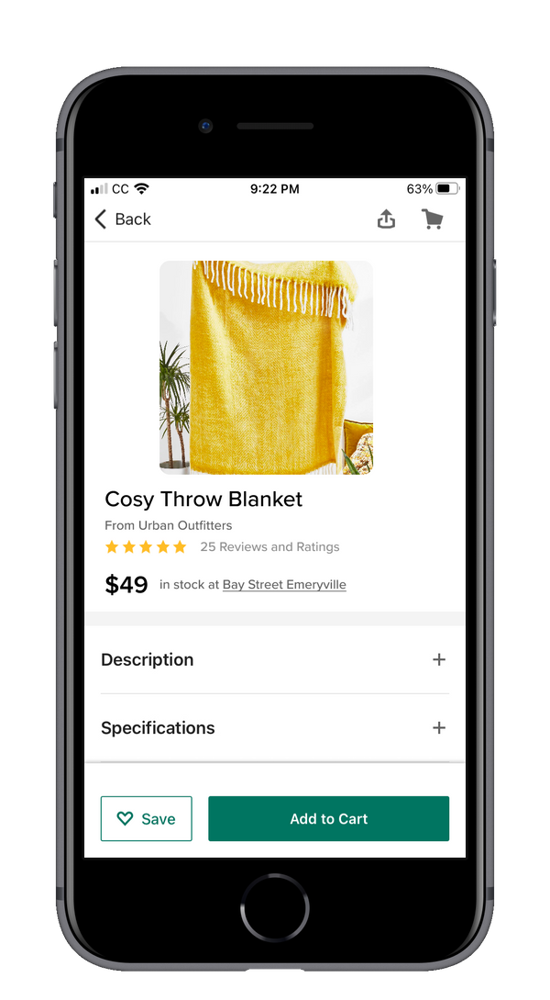
The updated product page allows users to see if the product is available nearby. They can add the product to their cart and decide if they’d like to pick it up at the store or have it shipped.
The 3 Product Recommendation Features
Verification: These are products that have been officially verified and shared by the original poster. These products are exact matches.
Automatic: Suggestions that are automatically shared based on algorithms and artificial intelligence similar to Pinterest’s product recommendations. These are similar but not exact product matches unless confirmed by the poster or by users.
Contribution: A contribution indicates if fellow users have pitched in to help find similar looking products that match the style. This feature helps create a collaborative and engaging environment within Houzz allowing users to use their combined knowledge together. These products can be exact matches or similar matches.
Adding a Contribution
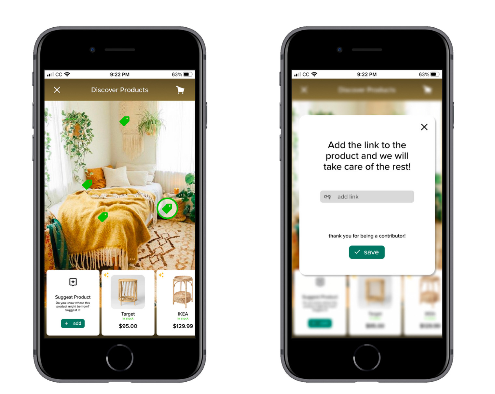
There are also situations in which a product has neither been verified by the original poster nor has contributions. If the user has seen the product in the past they can suggest the product by adding a link. Houzz would auto generate the cover photo and price based on the seller details and will also update the availability based on location settings.
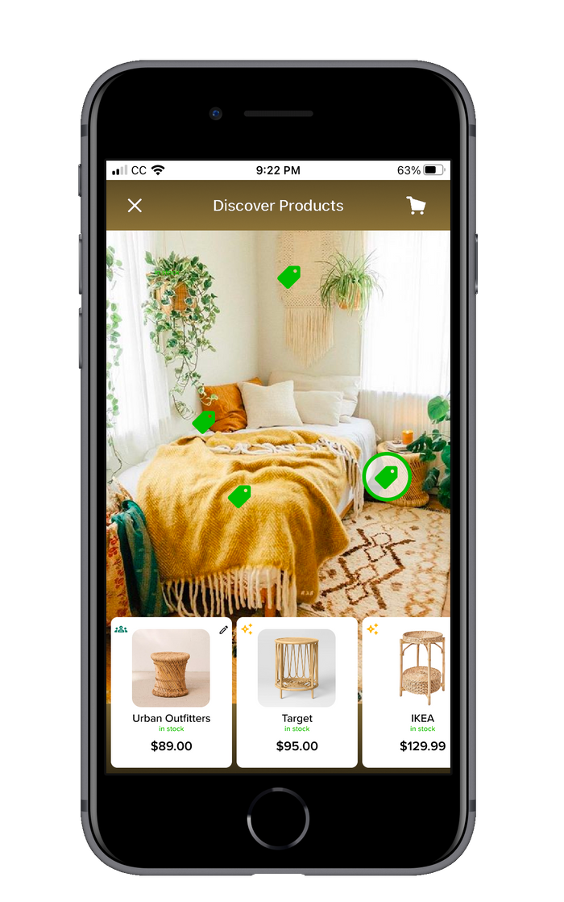
Here is what the page looks like when updated with a collaboration. Users can come back to edit their link if they found a different product that may be closer to the orginal product.
Orginal posters can also verify the product or remove and replace if it is incorrect.
exploring trends
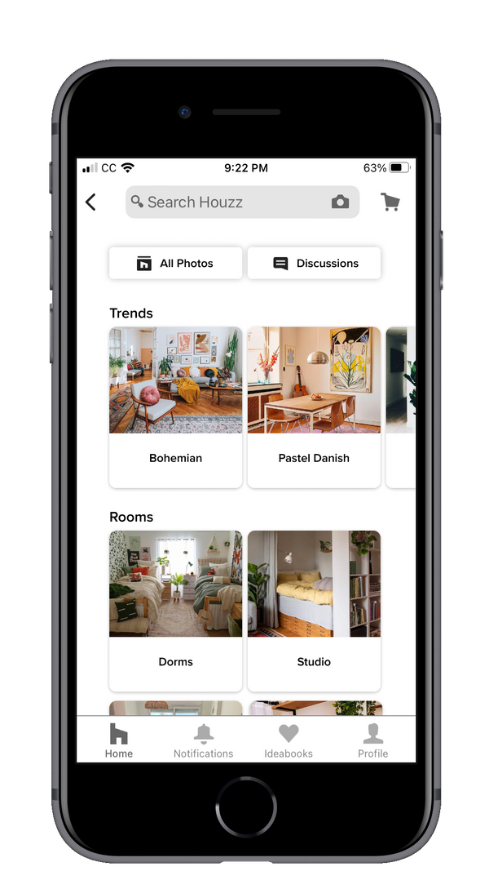
Based on my feedback I decided to create a page that allows users to find current trend styles. In order to do so I reconfigured the current Houzz idea page (within home) to cater to college students by first listing the current trends then giving room suggestions based on size, such as a dorm room or a studio apartment.
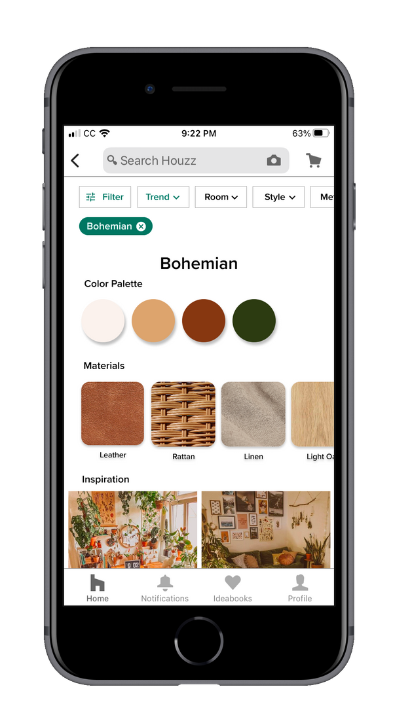
I also updated the trend page, for my previous one on Bohemian interior design. This update allows users to explore color palettes commonly used as well as materials in order to help with purchases and exploration.
additonal ideas / next steps
It would be really cool to see the contribution feature utilized as a reward system. User profiles can indicate if they are a super contributor and how much they have contributed, similar to badges that other apps such as Duolingo provide to encourage engagement. I also would have loved to explore the trend page further by exploring how to make it more dynamic and engaging as well as finding more ways to help students budget.
conclusion
As someone who is in love with all things interior design, I had a blast doing this project. I got to learn more about features in Houzz that I had never really used before, such as the shopping cart and professionals feature. There are so many things I could do in order to help Houzz curate for college students. I felt that I was able to cover two key aspects that were most important to creating an impactful journey for students using the app, finding affordable and easy to pick up items and learning more about the latest interior design trends.
Looking through my processes I find that what I have implemented for students can be used for other users as well, specifically the contribution feature; however I would love to continue on in the future in learning how to build a possible separate app that is specific to college students while still incorporating important Houzz features.
What I found to be the most helpful in order to complete this design challenge was:
1. Interacting with the users themselves and using human-centered design skills
I needed to make sure that for every step of the design process I was getting insight and feedback from the users themselves. Interacting with a variety of college students was necessary since I myself had never lived in a dorm and had no experience in the difficulties of interior design within that space
2. Staying true to the original mission of Houzz
While I had originally come with the goal of a re-design I decided to take a step back and understand what makes Houzz, well Houzz! I wanted to stick to Houzz’s mission “deliver the best technology, user experience and products for home remodeling and design”. I learnt what made Houzz differ from competitors such as Pinterest and how I could combine strategies they used in order to build a stronger app. I wanted to make sure that every feature I implemented was something that built on an existing feature within Houzz. My contributions feature was based off of the comments section in Houzz but built to reduce duplicate questions and prioritize products. The trends feature was built as an additional filter inspired by Pinterest’s style suggestions.